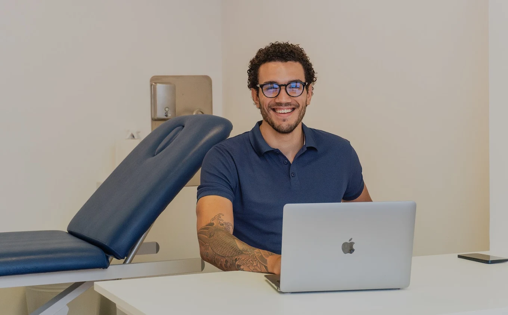

Profilo
Sebastian Gabriel Parolini.
Massoterapista. Lavoro con ascolto, osservazione e trattamenti manuali personalizzati. L'obiettivo non è fare una seduta generica, ma capire cosa serve davvero al tuo corpo.


Il percorso
Da Sondrio alla pratica professionale.
Originario di Sondrio, ho costruito il mio percorso intorno alla terapia manuale, allo sport e alla relazione diretta con la persona. Mi sono formato a Monza come Massaggiatore e Capo Bagnino degli Stabilimenti Idroterapici (MCB).
Nel lavoro quotidiano unisco tecnica e chiarezza: ti spiego cosa sto trattando, perché lo sto facendo e come osservare il corpo dopo la seduta. È così che un trattamento diventa davvero tuo.
I valori
Un approccio semplice da capire.
Quattro principi che guidano ogni seduta, dalla prima all'ultima. Niente fretta, niente percorsi confusi.
Ascolto reale
Prima della manualità viene il racconto: dolore, tensioni, sport, lavoro, sonno e abitudini.
Osservazione
Ogni corpo risponde in modo diverso. La seduta si adatta alla percezione e alla risposta muscolare.
Tecnica utile
Sportivo, terapeutico, drenaggio e riflessologia non sono etichette, ma strumenti scelti con criterio.
Continuità
Il trattamento funziona meglio quando capisci cosa mantenere anche fuori dallo studio.
Filosofia
Precisione tecnica, ritmo calmo, trattamento comprensibile.
Credo in un lavoro manuale che parte dall'ascolto e arriva al risultato senza scorciatoie. Non prometto miracoli: scelgo la tecnica giusta, la calibro su di te e ti accompagno passo dopo passo.
- Sedute sempre 1:1, mai standardizzate.
- Linguaggio chiaro: capisci cosa stiamo facendo e perché.
- Quando serve prudenza, viene prima la sicurezza.

Consulenza
Non sai quale trattamento scegliere?
Raccontami cosa senti: ti indirizzo io verso la seduta più adatta. Scrivimi su WhatsApp, rispondo in giornata.